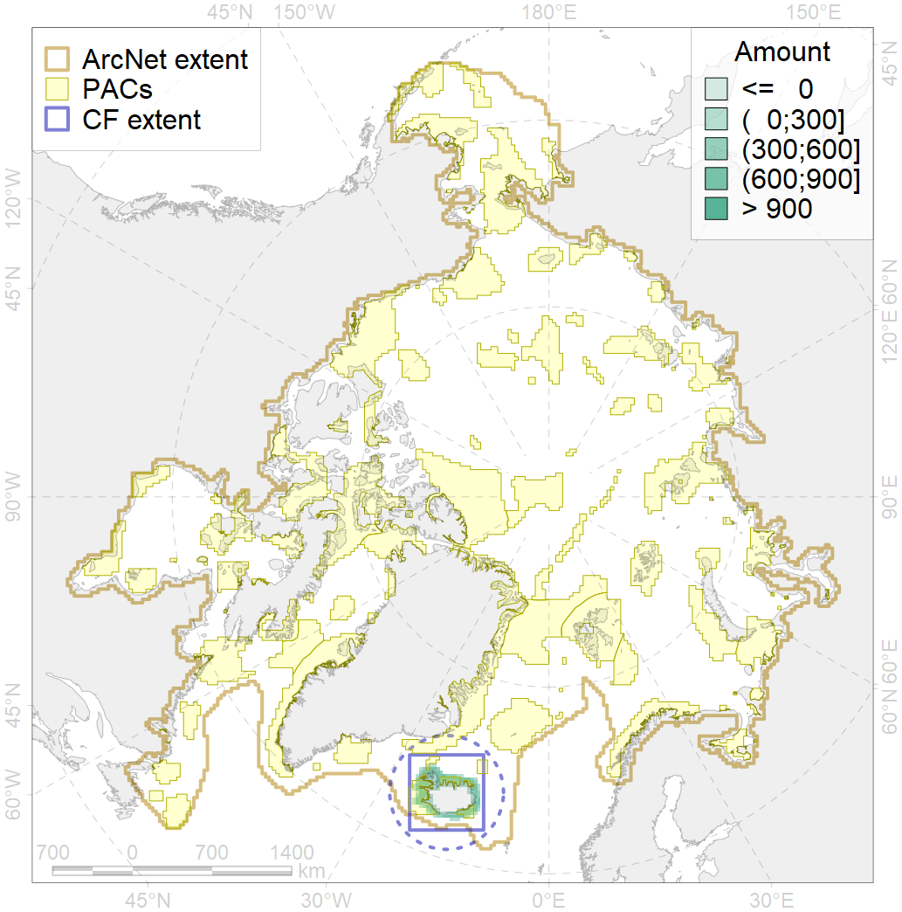
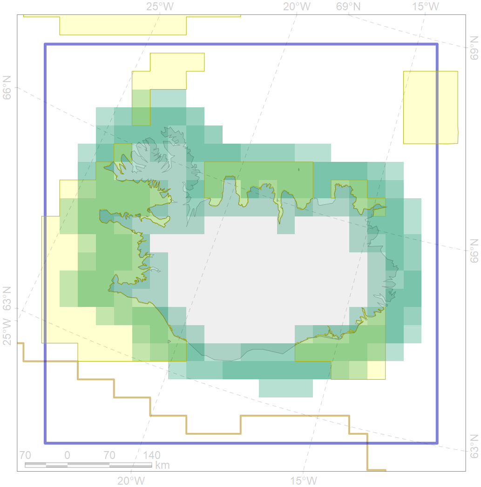

6086

| CF ID | 6086 |
| CF Name | Long-tailed duck (Clangula hyemalis) Iceland moulting&migration stopovers |
| Time Period | 2014 |
| Source(s) | Hearn et al 2015 |
| Seasonality | August-September |
| Depth Horizon | >0 m |
| Methodology | Field Data |
| Author Name | Gavrilo, Tertitski |
| Notes | |
| Conservation Target Set in the Scenario | 0.528 |
| Conservation Target Achieved in the Scenario | 0.538 (Scenario: 101.9%) |
| PAC ID | Proportion in the PAC | Contribution to ArcNet Target Achievement | PAC’s Contribution to the Achieved Target |
|---|---|---|---|
| 37 | 1.1% | 1.1% | 1.1% |
| 38 | 30.3% | 47.6% | 46.7% |
| 39 | 9.2% | 15.8% | 15.5% |
| 40 | 2.6% | 3.6% | 3.5% |
| 41 | 11.4% | 12.5% | 12.3% |
| inner | 54.6% | 80.6% | 79.1% |
| outer | 45.4% | 21.3% | 20.9% |